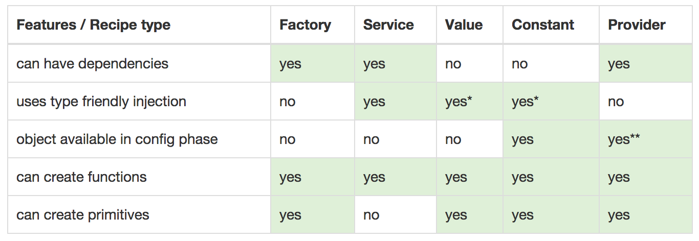

Angular modules
• You can package code as reusable modules.
• Modules can be loaded in any order (or even in parallel) because modules delay execution..
• Break your application to multiple modules.
Providers
• Value
• Constant
• Service
• Factory
• Decorator
• Provider
• Special purpose objects: (Controller, Directive, Filter and Animation).

VALUE
A simple injectable value
app.value('magic', 'DEADBEEF');
Can not be injected into configurations.
Can be intercepted by decorators.
CONSTANT
A constant is a value injectable anywhere !
app.constant('ratio', 1.618);
Can not intercepted by decorators.
High priority (are evaluated first).
Tip: Create an AngularJS Constant for vendor libraries' global variables.
SERVICE
Injectable contructor
app.service('api', function (dep) { ... });
A singleton.
Good to handle cross app/controller shared data.
FACTORY
Injectable contructor
app.factory('widget', function (dep) { ... return ??;});
A provider with a $get method, essentially.
Can return any type of primites and custom types.
DECORATOR
Modify or encapsulate other provisions
app.config(function($provide){
$provide.decorate('name', function($delegate) {
// Modifycations in the 'name' provisions
return $delegate = ' the great';
});
});
Userful for intercepting upstream services.
Only the provider provides the decorator function :-$.
Stackable.
PROVIDER
The low-level nitty gritty
$provide.provider('foo', { $get: function(dep) { ... } });
$provide.provider('foo', function() {
this.$get: function(dep) { ... }
});
You just need a $get method.
Can be configured.
More storage options.
Can $inject other providers when instantiated.
QUIZ!
app.value('v', 1234);
app.config(function(c) { ... });
app.config(function(v) { ... });
app.config(function($provide) {
$provide.provider('p', {
$get: function(v) { ... }
});
});
app.constant('c', function(v) { ... });
app.factory('f', function(v) { ... });
app.run(function(v) { ... });
app.service('s', function(c) { ... });
app.value('w', function(v) { ... });
app.controller('ctrl', function(v, c, w, f, p, s) { ... });
Value recipe
var myApp = angular.module('myApp', []);
myApp.value('apiToken', 'a12345654321x');
myApp.controller('mainController', ['apiToken', function MainController(apiToken) {
this.apiToken = apiToken;
}]);
<html ng-app="myApp">
<body ng-controller="mainController as main">
Client ID: {{main.clientId}}
</body>
</html>
In this example, we've used the Value recipe to define the value to provide when MainController asks for the service with id "apiToken".
Value recipe
var myApp = angular.module('myApp', []);
myApp.value('apiToken', 'a12345654321x');
myApp.controller('mainController', ['apiToken', function MainController(apiToken) {
this.apiToken = apiToken;
}]);
<html ng-app="myApp">
<body ng-controller="mainController as main">
Client ID: {{main.clientId}}
</body>
</html>